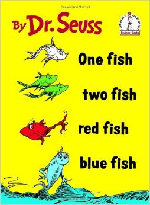

Learning how to format data is an essential skill to allow you to easily produce figures and run analyses. You should always aim for data that are formatted with each observation as a row and each variable as a column (see help on Data entry). For some types of variables, however, there are choices to be made about how you input the data.
For example, it is very common in the biological sciences that we record the abundance of many species of organisms from each of our replicate observations (transects, quadrats, surveys etc). We then have two choices for how to input that data:
1. a separate column for every species that records its abundance, or,
2. two columns - one that identifies the species and one that records the abundance.

Consider a data set that recorded the abundance of fish from each of three transects that were set up on two reefs in two separate months. First, import this sample data set, ReefFish.csv, to see the way it is formatted.
ReefFish <- read.csv(file="ReefFish.csv", header =T)## Site Month Transect Species Abundance
## 1 Reef1 January 1 RedFish 4
## 2 Reef1 January 1 BlueFish 5
## 3 Reef1 January 1 BlackFish 10
## 4 Reef1 January 2 RedFish 42
## 5 Reef1 January 2 BlueFish 13
## 6 Reef1 January 3 RedFish 3This data frame is arranged in a long format with one variable that identifies the fish species, and one variable that holds the abundance data. The other three variables identify each transect (Site, Month and Transect),
This format is efficient for data entry as you only need to have rows for the species that were present in that particular transect, and don’t have to keep adding columns every time a new species is recorded. You would need the data in this format if you wanted to use a plot to contrast the abundance of fish among the three species.
If, however, you would like to contrast the abundance of one of the species, or create a species by sample matrix that is required by the various multivariate analyses that contrast species composition, the data will need to be manipulated in some way.
Fortunately, there are some very handy packages in R that make this possible. If you have ever used pivot tables in Excel, they are doing similar things.
In this example, we will use the package tidyr to convert this data frame to a wide format that will allow further data exploration. First, install and load the package.
library(tidyr)To convert this data set into a wide format with a separate column for each fish species, we use the function spread.
ReefFish.wide <- spread(ReefFish, Species, Abundance, fill = 0)The arguments of spread are:
* The data frame you would like to convert (in this case, ReefFish)
* The variable whose levels are being converted to new columns (in this case, Species)
* The variable that holds the values that will fill in the new columns (in this case, Abundance)
* fill=0 tells spread to fill in a zero for when a species was missing from a given transect.
## Site Month Transect BlackFish BlueFish RedFish
## 1 Reef1 February 1 47 12 52
## 2 Reef1 February 2 69 3 0
## 3 Reef1 February 3 0 0 8
## 4 Reef1 January 1 10 5 4
## 5 Reef1 January 2 0 13 42
## 6 Reef1 January 3 8 0 3Note that the wide format of this data now has a column for each species with all the abundance values. You would get as many columns as you had unique levels in the Species column. You get as many rows as you have unique combinations of the variables that are not being split up (Site, Month and Transect in this example).
You can now plot or analyse any single species against possible predictor variables of Site or Month. Multivariate analyses of species composition against possible predictor variables also need each of the species to be in separate columns. You can select them from this data frame with the select function of dplyr (see Subsetting data).
*Note that if you had a transect with no fish observations, you would need to add a row to the original data set, perhaps with a species code of “none”. If you didn’t, that replicate observation would be missing from the wide format - needed if you want to contrast abundance across reefs etc.
The function gather will convert data from the wide format to a long format.
Here, we can use this code to get our original data set back from the wide format data set we just made.
ReefFish.long <- gather(ReefFish.wide, Species, Abundance, 4:6)## Site Month Transect Species Abundance
## 1 Reef1 February 1 BlackFish 47
## 2 Reef1 February 2 BlackFish 69
## 3 Reef1 February 3 BlackFish 0
## 4 Reef1 January 1 BlackFish 10
## 5 Reef1 January 2 BlackFish 0
## 6 Reef1 January 3 BlackFish 8The arguments of gather are:
* The data frame that we would like to convert
* key - the name of the new variable that will hold the names of the variables being gathers (in this case, Species)
* value - the name of the new variable that will hold the values from the variables being gathered (in this case, Abundance)
* the names of the columns to be gathered (by name or by column number)
In that code, we chose the three variables with the species data by their column numbers (4 to 6). We could also just use their names, or the first and last column in a sequence of columns. For example,
ReefFish.long <- gather(ReefFish.wide, Species, Abundance, BlackFish, BlueFish, RedFish)
ReefFish.long <- gather(ReefFish.wide, Species, Abundance, BlackFish:RedFish)We have now recreated our original data set. The only difference is that the rows have been sorted and that species that were absent from a given transect have their own row with an abundance value of zero.
The package reshape2 also allows us to reshape data, and has a few extra capabilities that are not present in tidyr.
library(reshape2)Instead of spread, dcast is used to go from a long to wide format. This code will do the same as we saw above.
ReefFish.wide <- dcast(ReefFish,
Site + Month + Transect ~ Species,
value.var = "Abundance", fill = 0)The arguments of dcast are:
* The data frame you would like to convert (in this case, ReefFish)
* The variable(s) you would like to include unchanged as columns in the new data frame are to the left of the ~ (Site, Month and Transect)
* The variable(s) that is being converted to new columns are to the right of the ~ (in this case, Species)
* The variable that holds the values that will fill in the new columns (specified by value.var, in this case, Abundance.
* fill=0 tells dcast to fill in zeroes for when a species was missing from a given transect.
Instead of gather, melt is used to go from a wide to long format.
ReefFish.long <- melt(ReefFish.wide,
id.vars = c("Site","Month","Transect"),
measure.vars = c("RedFish","BlueFish","BlackFish"),
variable.name = "Species", value.name = "Abundance")The arguments of melt are:
* The data frame that we would like to convert
* id.vars specifies the columns that remain unchanged (here the predictor variables that label each replicate observation)
* measure.vars specifies which variables hold the data that will go into the new column
* variable.name and value.name provide the names of the new column.
What reshape2 can do that tidyr cannot is the ability to summarise data as you reshape from long to wide.
In the above example, there was only one row that belonged to each combination of Site, Month and Transect. If there are duplicate rows for each combination of the variables that you want to keep in the new data frame (the ones to the left of the ~) you need to tell dcast how you would like to deal with the duplicates (e.g., add them up or calculate their mean)
For example, if we wanted to pool the transects from each survey, we could remove Transect from the list of variables to include in the new data frame and add an argument (fun.aggregate = sum) to tell dcast that we would like to add up the values from the three transects in each Site/Month combination.
ReefFish.wide_sum <- dcast(ReefFish,
Site + Month ~ Species,
value.var = "Abundance",
fun.aggregate = sum, fill = 0)## Site Month BlackFish BlueFish RedFish
## 1 Reef1 February 116 15 60
## 2 Reef1 January 18 18 49
## 3 Reef2 February 42 106 18
## 4 Reef2 January 137 110 29If we wanted the mean of the three transects, we can use fun.aggregate = mean.
ReefFish.wide_mean <- dcast(ReefFish,
Site + Month ~ Species,
value.var = "Abundance", fun.aggregate = mean, fill = 0)You can also put more complex expressions in the reshape formula to create new variables that are combinations of old ones. For example, you could create a new column for each of the combinations of Species and Month by adding both variables to the right of the ~
ReefFish.wide_combined <- dcast(ReefFish,
Site + Transect ~ Species + Month,
value.var = "Abundance", fill = 0)## Site Transect BlackFish_January BlueFish_February BlueFish_January
## 1 Reef1 1 10 12 5
## 2 Reef1 2 0 3 13
## 3 Reef1 3 8 0 0
## 4 Reef2 1 72 0 0
## 5 Reef2 2 0 22 9
## 6 Reef2 3 65 84 101
## RedFish_February RedFish_January
## 1 52 4
## 2 0 42
## 3 8 3
## 4 0 5
## 5 3 0
## 6 15 24Type ?gather and ?spread to get the R help for these tidyr functions.
Type ?dcast and ?melt to get the R help for these reshape2 functions.
Data wrangling with dplyr and tidyr cheat sheet produced by Rstudio.
Data wrangling with dplyr and tidyr
Author: Alistair Poore
Last updated:
## [1] "Tue Jan 25 09:42:47 2022"